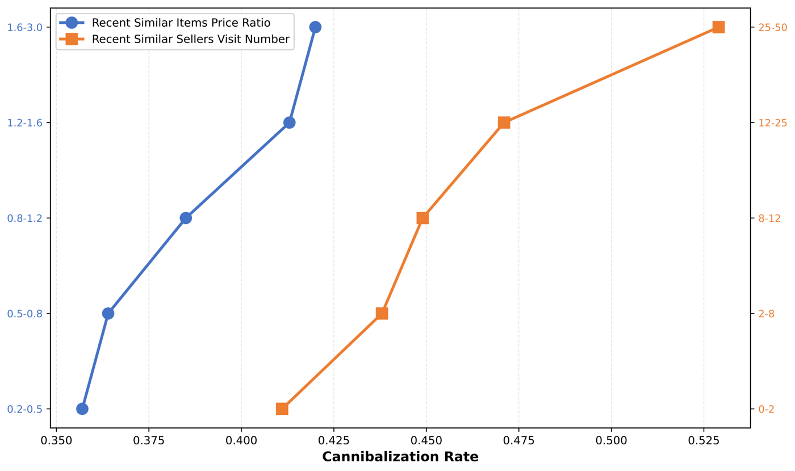
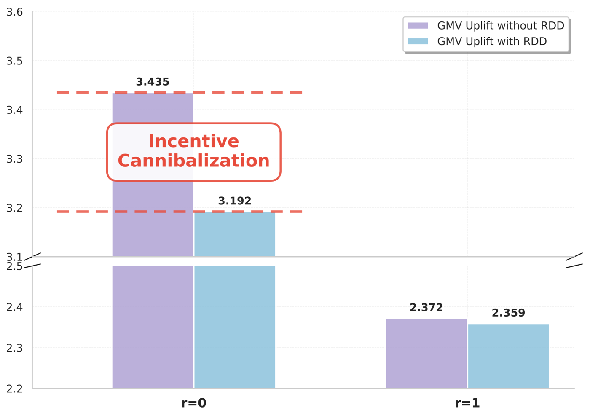

- ΔGMV +4.08%本番のモデルと比べたオンライン A/B テスト（8 日間）で、プラットフォーム全体の ΔGMV が 4.08% 増え、販促費は 2.45% 減り、ROI は 6.69% 上がった（Table 3）。
- AUUC 0.794 → 0.849実データの利用者単位の AUUC で、ベースの EUEN に PGA と RDD を加えたときの変化。PGA だけでも 0.826 になった（Table 2）。
- 過大推定 7.6%クーポンを使わずに買った利用者の平均予測アップリフト。RDD なしは 3.435、RDD ありは 3.192 で、使って買った利用者では両者がほぼ一致した（Fig. 4）。
多数の店舗が並ぶ EC では、クーポンによる店舗の増分が、他店の売上減やクーポンなしでも起きた購入で打ち消されることがある
EC プラットフォームはクーポンや補助金をどの利用者に配るかを、アップリフトモデル（個人ごとの処置効果 ITE の推定）で決めることが多い。DragonNet や EUEN などの既存のモデルは、ある単位への処置がほかの単位の結果に影響しないという仮定（SUTVA）に暗に頼っている。論文は、多数の店舗が並ぶ市場ではこの仮定が 2 つの形で崩れると指摘する（図1）。
- 店舗間のカニバリゼーション もともと 90 ドルの商品を買うつもりだった利用者が、別の店舗の 5 ドルクーポンにつられて 30 ドルの商品を買う。クーポンを出した店舗の GMV は増えるが、プラットフォーム全体の GMV は減る。店舗ごとの増分を最大にするモデルは、この「ゼロサム」の付け替えを捉えられない。
- インセンティブ間のカニバリゼーション もっと額の大きいクーポンを持っている利用者は、配られた試験用のクーポンを使わずに買い物をする。この「クーポンを使わない購入」まで処置の効果として数えると、もともとの購買意欲やほかのクーポンの効果を、配ったクーポンの効果と取り違える。
論文の実データでは、利用者に関係する店舗の ITE を既存のモデルで足し合わせると、オンラインで実際に観測した効果を約 35% 上回った。また、クーポンを配って購入に至った行動のうち約 25% は、クーポンが使われていなかった。

店舗 \(s_j\) にクーポンを出したときの全体の純増分は、その店舗の見かけの増分と他店への影響の和で、後者が負ならカニバリゼーションである
データは利用者 \(i\) の特徴 \(x_i\)、店舗 \(s\) のクーポンを配ったかどうか \(t_{i,s}\in\{0,1\}\)、配ったクーポンを使ったかどうか \(r_{i,s}\in\{0,1\}\)、その店舗での GMV \(y_{i,s}\ge 0\) からなる。利用者の全体の GMV を \(Y_i = \sum_{s} y_{i,s}\) とし、目標を店舗ごとの増分ではなく \(Y_i\) の増分に置く。店舗 \(s_j\) にクーポンを出したときのプラットフォームの純増分は次のように分かれる。
第 2 項が負のとき、店舗 \(s_j\) の増分の一部または全部は他店の減少で打ち消されている。これが店舗間のカニバリゼーションである。一方、クーポンなしでも（あるいはプラットフォーム全体のクーポンで）買っていた利用者が配られたクーポンを使うと、第 1 項は見かけだけの増分になる。論文はこれをインセンティブ間のカニバリゼーションと呼ぶ。
使用の有無 \(r\) は処置の後に決まる変数なので、処置群の結果の分布は使って買った場合と使わずに買った場合の混合になる。
第 2 の成分はもともとの需要やほかのクーポンで起きた購入を含みうる。処置群の購入をすべて増分として扱うと、この成分の購入まで増分の推定に混ざる。
店舗ごとの予測の合計を利用者の全体の GMV に合わせると、他店から移しただけの増分が罰せられる
ベースにするのは、店舗ごとに処置なしの GMV（Control Net）と処置ありの GMV（Uplift Net）を予測し、その差をアップリフトとする構造である。論文は実データで最もよかった EUEN をこのベースに使う。
Platform-level Global Alignment（PGA）は、この上に Platform head を加える。利用者 \(u\) の候補店舗 \(\mathcal S_u\) それぞれについて足し合わせられる予測 \(pGMV^{\text{pla}}_{s_i}\) を出し、その合計をログから得た利用者の全体の GMV に合わせる。
店舗ごとに見て多くの店舗で同時に大きな増分を予測すると、合計が膨らんで全体の損失で罰せられる。ある店舗の増分が他店の減少から来ているだけなら全体のパイは大きくならないので、この制約がそうした見かけの増分を抑える。論文はこれを、店舗の組をすべて明示的にモデル化しなくても、代替関係を暗に学べる仕組みとして説明している。
推論では他店を足し合わせない。Platform head の出力を、対象の店舗 \(s_j\) に処置ありとなしの 2 通りで計算し、その差 \(\Delta_{\text{platform}}(u,s_j) = p_{\text{treat}} - p_{\text{control}}\) を全体への限界的な増分の近似として使う。店舗をこの値で並べ、上位 \(K\) 件にクーポンを配る（付録 C）。論文は、これは他店の結果が変わらないと仮定するものではなく、他店への影響は全体の損失で学んだパラメータと利用者・店舗の表現に暗に取り込まれている、と述べている。
処置群の結果を、クーポンを使った購入と使わなかった購入の 2 つの経路に分けて予測する
Redemption-based Decomposition Denoising（RDD）は、利用者と候補店舗の組ごとに、使用確率 \(p_r = p(r{=}1\mid z_{u,s_i})\) を Redem Net で予測する。処置側は使った経路と使わなかった経路それぞれの GMV の増分を、対照側はクーポンなしの GMV を出す。店舗単位の GMV の予測は全期待値の法則にしたがって次の混合として組み立てる。
こうすると、クーポンを使わない購入が、使った購入と同じ増分のパターンを共有させられずに済む。使用の予測を補助タスクとして足すだけとは違い、使用を処置群の結果の経路そのものに組み込む。論文はこれを Entire-Space モデリング（ESMM）の考え方に沿うものと位置づけている。
どの部分も同じ表現の上に載る。利用者の行動系列、クーポンの受け取り・使用の履歴などを Transformer で符号化し、候補（店舗とクーポンの属性の組）をクエリにした Treat-Attention で、候補ごとの表現 \(z_{u,c}\) を作る。GMV はゼロが多く裾が長いので、GMV に関わる出力にはすべて Tweedie 損失（\(1 < p < 2\)）を使い、使用の予測には交差エントロピーを使う。全体の損失は次の通りで、実験では \(\lambda_{\text{pla}} = \lambda_{\text{redem}} = 1\) とした。
![Architecture of CanniUplift. Left: the Platform-level Global Alignment module, whose per-seller platform-view predictions are summed and matched to the user's platform GMV. Middle: the Redemption-based Decomposition Denoising module, with a Redem head predicting redemption probability and two heads for the redemption and non-redemption GMV increments. Right: the base method, a seller-view uplift and control network. Bottom: shared encoders with treat-attention and self-attention over treatment redemption, treatment, seller candidate and treatment candidate sequences.](assets/fig2_framework.png)
実データと、同じカテゴリの店舗に重ねて触れるほど効果が減る合成データで、店舗単位と利用者単位の AUUC・QINI を比べた
実データは大規模な EC システムのオンラインのログで、上で触れた約 35% の過大推定と約 25% の「使わない購入」を含む。クーポンの額面が複数あるため、額面を区間に分けて区間ごとに AUUC・QINI を計算し、標本数で重みづけした wAUUC・wQINI を使う。データの規模や期間は本文に書かれていない。
合成データは利用者 20,000 人、店舗 500,000 店で、各利用者に 50 店を割り当てる。処置は利用者単位で確率 0.5 の無作為割付とし、利用者の 50 店すべてが同じ処置を受け継ぐ。店舗のカテゴリを 10 の区分にまとめ、利用者に割り当てた店舗の列で、同じ区分の店舗がそれより前に多く出ているほどアップリフトを減らす（減らす幅は元のアップリフトの絶対値の 50% まで）。複数のクーポンの相互作用は再現が難しいため、合成データでは店舗間のカニバリゼーションだけを扱い、RDD の効果は実データのアブレーションで確かめる。
評価は 2 つの粒度で行う。店舗単位は利用者と店舗の組ごとのアップリフトの並びを、利用者単位は利用者ごとに候補店舗の予測を足し合わせてからの並びを評価し、後者はプラットフォーム全体の増分が大きい利用者を見分けられるかを表す。比較相手は DragonNet、CFRNet、TARNet、T-Learner、EUEN、X-net、M3TN、UMLC、HUM で、ハイパーパラメータは Optuna で 40 回探索した。
このページの数値は arXiv v1（2026 年 7 月 6 日。KDD 2026 の出版情報と DOI が入った版）の本文と表による。ACM の出版版（会議録 V.2、pp. 7367–7378）の本文とは照合していない。
提案法は両データのすべての指標で最も高く、PGA は利用者単位の AUUC を特に大きく上げた
実データでは、Control Net を切り離した T-Learner と EUEN が、ネットワークを共有する DragonNet・CFRNet・TARNet より高かった。論文は、処置に関わる特徴が多いこの場面では、対照側の予測からその情報を切り離す必要があり、EUEN と T-Learner の構造はそれがしやすいためだと説明している。提案法は、実データでは EUEN に PGA と RDD を加えたもの、合成データでは店舗間のカニバリゼーションだけを模しているので EUEN に PGA を加えたものである（表1）。
| 手法 | 実データ（重みつき） | 合成データ | ||||||
|---|---|---|---|---|---|---|---|---|
| 店舗 AUUC | 店舗 QINI | 利用者 AUUC | 利用者 QINI | 店舗 AUUC | 店舗 QINI | 利用者 AUUC | 利用者 QINI | |
| DragonNet | 0.650 | 0.248 | 0.705 | 0.238 | 1.0475 | 0.5432 | 0.9438 | 0.4430 |
| CFRNet | 0.694 | 0.261 | 0.748 | 0.276 | 1.0084 | 0.4966 | 0.9960 | 0.4839 |
| TARNet | 0.729 | 0.284 | 0.771 | 0.294 | 1.0074 | 0.5030 | 1.1052 | 0.5972 |
| T-Learner | 0.730 | 0.289 | 0.782 | 0.301 | 0.8308 | 0.3305 | 0.9548 | 0.4512 |
| EUEN | 0.744 | 0.297 | 0.794 | 0.319 | 1.0940 | 0.5837 | 1.1245 | 0.6024 |
| X-net | 0.713 | 0.273 | 0.786 | 0.307 | 1.0612 | 0.5589 | 0.9481 | 0.4553 |
| M3TN | 0.709 | 0.281 | 0.775 | 0.313 | 1.1382 | 0.6273 | 0.9714 | 0.4591 |
| UMLC | 0.681 | 0.255 | 0.742 | 0.271 | 1.0291 | 0.5263 | 0.9165 | 0.4238 |
| HUM | 0.701 | 0.266 | 0.759 | 0.289 | 0.9714 | 0.4728 | 0.9612 | 0.4613 |
| 提案法 | 0.769 | 0.314 | 0.849 | 0.348 | 1.1596 | 0.6380 | 1.1474 | 0.6237 |
表1 論文 Table 1 の数値。下線は提案法を除いた最良。橙はベースにした EUEN、青は提案法。標準誤差や試行回数は報告されていない。
実データのアブレーション（表2）では、PGA を加えると利用者単位の AUUC が 0.794 から 0.826 に上がった。RDD は使用のラベルを教師に使うので、使用の予測を補助タスクとして足すだけの「+Redem」も比べている。同じラベルを使っても RDD は +Redem をすべての指標で上回り、経路に分ける構造そのものに効果があると論文は述べる。PGA と RDD を両方加えたものが最も高かった。論文は、PGA は利用者を全体の増分の大きさで並べる力を上げ、RDD は特に QINI（累積の純増分）で過大な帰属を減らす、という補い合う効果として解釈している。
| 指標 | EUEN | +PGA | +Redem | +RDD | 提案法（+PGA +RDD） |
|---|---|---|---|---|---|
| 店舗 AUUC | 0.744 | 0.751 | 0.749 | 0.757 | 0.769 |
| 店舗 QINI | 0.297 | 0.302 | 0.299 | 0.308 | 0.314 |
| 利用者 AUUC | 0.794 | 0.826 | 0.803 | 0.818 | 0.849 |
| 利用者 QINI | 0.319 | 0.337 | 0.326 | 0.332 | 0.348 |
表2 実データでのアブレーション（論文 Table 2 の数値）。
推定したカニバリゼーション率は同じカテゴリの店舗を多く訪れた利用者ほど高く、RDD はクーポンを使わずに買った利用者の予測アップリフトを下げた
店舗単位の増分の予測 \(p_{\text{seller}}\) と全体の増分の予測 \(p_{\text{platform}}\) から、個人ごとのカニバリゼーション率を \(g = (p_{\text{seller}} - p_{\text{platform}})/p_{\text{seller}}\) と定義する。個人の真の値は分からないので、論文は過去 10 日のクリック系列から、カニバリゼーションが起きやすいと考えられる 2 つの特徴との関係を見た（図3）。同じカテゴリの店舗を訪れた数が多い利用者ほど、また最近見た同じカテゴリの商品が今の商品より高い利用者ほど、推定した \(g\) は単調に高かった。論文はこれを、PGA が店舗間のカニバリゼーションの信号を捉えている裏づけとしている。

RDD については利用者を使用の有無で分け、平均の予測アップリフトを比べた（図4）。クーポンを使わずに買った利用者（\(r=0\)）では、RDD なしのモデルが 3.435、RDD ありが 3.192 で、RDD なしは 7.6% 高く見積もっていた。使って買った利用者（\(r=1\)）では両者の予測はほぼ一致した。論文は、\(r=0\) の群にはもともと買う気の強い利用者や、より額の大きいクーポンに動かされた利用者が含まれ、RDD なしのモデルは使われなかったクーポンに増分を帰属させすぎていると解釈している。

8 日間のオンライン A/B テストで、販促費が 2.45% 減り、プラットフォーム全体の ΔGMV は 4.08% 増えた
2025 年 10 月 5 日から 12 日まで、本番のモデルと比べる A/B テストを行った。ROI は処置群の対照群に対する GMV の増分を費用で割った \(\mathrm{ROI} = \Delta\mathrm{GMV}/\mathrm{Cost}\) と定義する。提案法は販促費を 2.45% 減らし、プラットフォーム全体の ΔGMV を 4.08% 増やし、ROI を 6.69% 上げた（Table 3）。本文には、各群の規模、本番のモデルの構成、差の信頼区間や検定は書かれていない。
論文は限界として、販促が将来の購入を前倒しさせる時間方向のカニバリゼーションは扱っていないこと、過去の行動に頼るためリアルタイムの代替を捉えるのが遅れることを挙げている。
予算の配分そのものは扱わず、配分の順位づけに使う増分を店舗単位からプラットフォーム全体の純増分に置き換える
- 推定するもの 店舗ごとのクーポンによる GMV の増分と、それがプラットフォーム全体の GMV をどれだけ動かすか（Platform head の処置ありとなしの差 \(\Delta_{\text{platform}}\)）。結果は GMV で、クーポンの使用確率も同時に予測する。
- コストの扱い モデルには入らない。オンライン評価で販促費と \(\mathrm{ROI} = \Delta\mathrm{GMV}/\mathrm{Cost}\) を報告するだけである。
- 処置の種類 店舗ごとのクーポンの有無。額面、利用条件の金額、割引の種類、有効期限などは候補の特徴として表現に入り、実データの評価では額面を区間に分ける。
- 予算制約 明示的な予算制約や配分の最適化はない。推論では \(\Delta_{\text{platform}}\) で店舗を並べて上位 \(K\) 件に配るとだけ書かれ、\(K\) の決め方は述べられていない。
- データ 実データは EC のオンラインのログ（割付が無作為かどうかは本文に書かれていない）。合成データは利用者単位の無作為割付。
予算つきの割当てとの関係を補足しておく（解説者の注）。予算のもとで効果の大きい順、あるいは費用あたりの効果（ROI）の高い順に配るとき、並べるスコアの分子が店舗の見かけの増分だと、他店から移しただけの売上や、クーポンなしでも起きた購入まで効果として数え、その分だけ予算を配ってしまう。この論文が直すのはその分子で、プラットフォーム全体の純増分を推定値として渡す。予算をどう配るか（しきい値やナップザック型の最適化）は論文の範囲外で、論文自身もこの対応には触れていない。
@inproceedings{he2026canniuplift,
title = {CanniUplift: A Holistic Framework for Mitigating Seller and Incentive Cannibalization in E-commerce Uplift Modeling},
author = {He, Zuwang and Shu, Shihao and Qu, Yuli and Gao, Hanyu and Zhang, Ziliang and Chen, Diwei and Yan, Xiangda and Gao, Buyu and Zhu, Tanchao and Li, Yumeng and Zhu, Junxiong},
booktitle = {Proceedings of the 32nd ACM SIGKDD Conference on Knowledge Discovery and Data Mining V.2},
pages = {7367--7378},
year = {2026},
publisher = {ACM},
doi = {10.1145/3770855.3818334}
}